Legends Quest
Scripts in
scripts/quests/quest_legends/NPCs involved
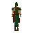
Forester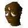
Gujuo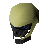
Irvig Senay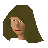
Jungle Forester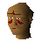
Jungle Savage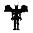
Nezikchened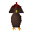
Oomlie Bird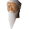
Radimus Erkle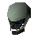
San Tojalon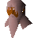
Ungadulu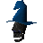
ViyeldiItems involved
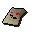
A scribbled note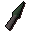
Adamant knife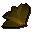
Ardrigal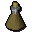
Ardrigal mixture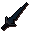
Black dagger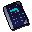
Book of binding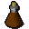
Bravery potion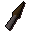
Bronze knife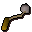
Bull roarer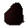
Charcoal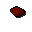
Chunk of crystal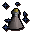
Enchanted vial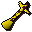
Gilded totem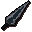
Glowing dagger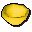
Gold bowl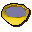
Golden bowl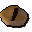
Half a meat pie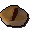
Half a redberry pie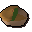
Half an apple pie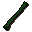
Hollow reed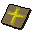
Holy force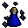
Holy water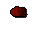
Hunk of crystal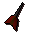
Iron dart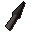
Iron knife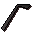
Lockpick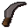
Machete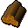
Magic logs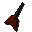
Mithril dart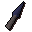
Mithril knife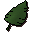
Palm leaf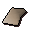
Papyrus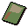
Paramaya ticket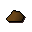
Rocks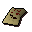
Scrawled note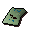
Scrumpled note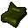
Shamans tome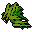
Snake weed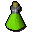
Snakeweed mixtureSoul runeSpinach rollSteel dartSteel knifeInvolvement is derived from identifiers referenced by the quest scripts.